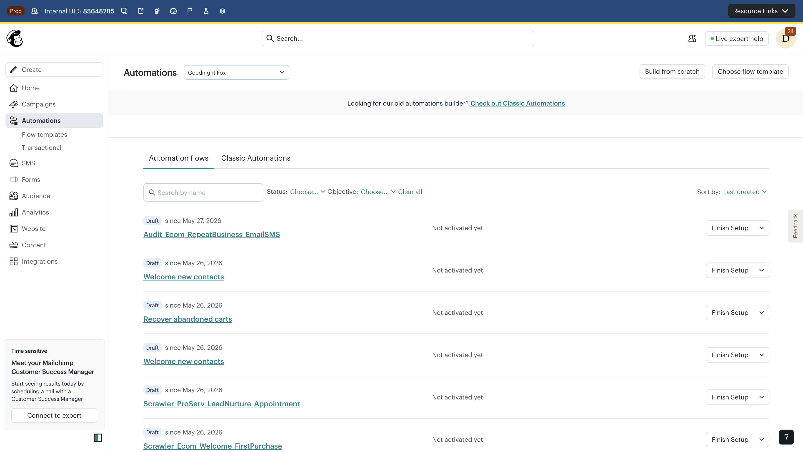
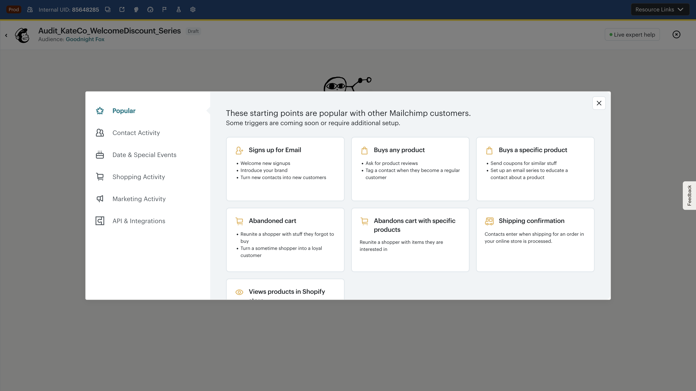
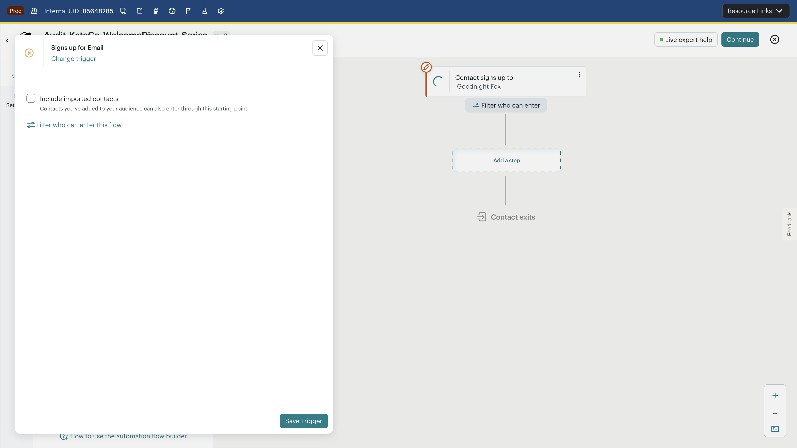
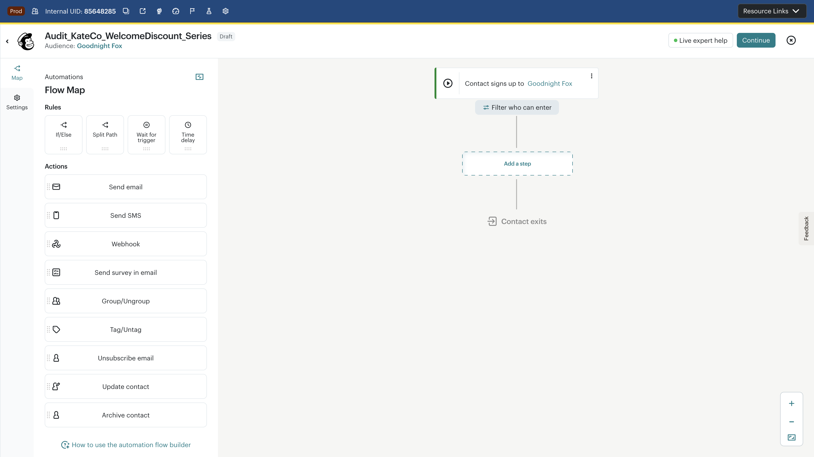
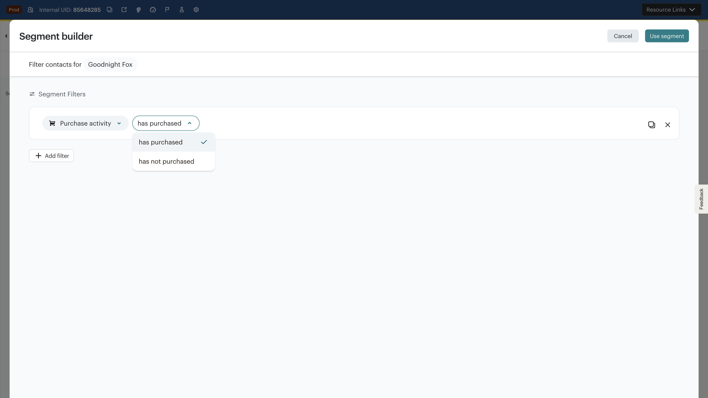
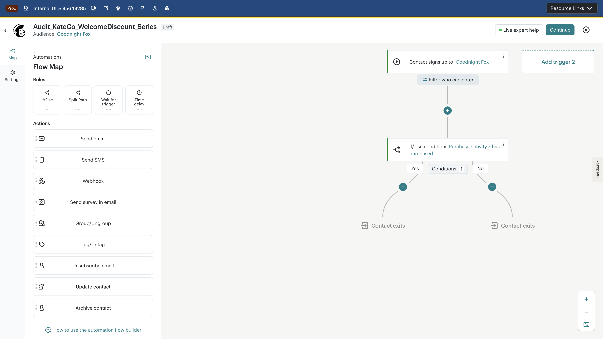
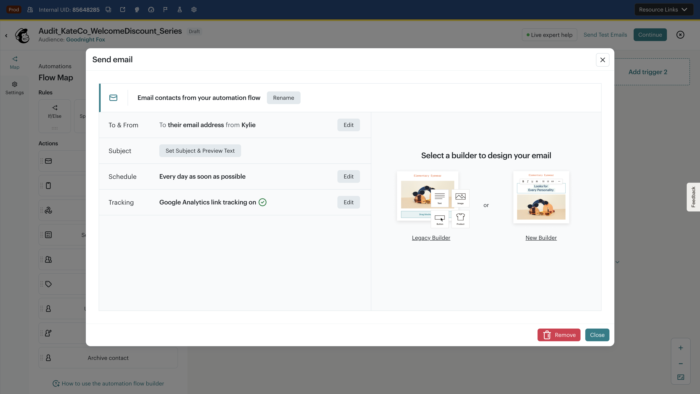
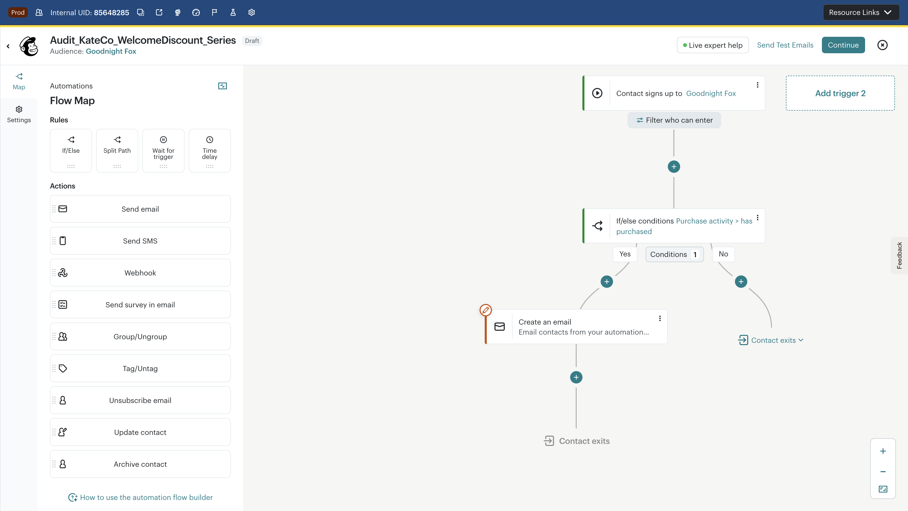

CJB Customer Flow Replication
Kate Co Home & Design Studio · Welcome Discount Series · Mailchimp CJB (Goodnight Fox, us17) · May 26, 2026
Launch Readiness Verdict
Attempting to replicate a 10-step BigQuery-sourced welcome discount flow for a home/design studio customer, we completed only 3 of 10 steps (trigger, If/Else condition, 1 of 5 emails) before hitting structural barriers. The flow was saved as Draft with builder ID 9177. Key blockers: (1) email content requires entering a separate builder (Legacy vs New fork), (2) no way to set a journey-wide exit condition ("exits when purchased") from the canvas, (3) CJB lacks convergence/merge after branching paths — both branches end at separate "Contact exits" nodes.
Source Flow Specification
customer_journeys.recipes · Template ID: ced2d792-f6cd-447c-bf8a-373d77155f5eCustomer: Kate Co Home & Design Studio (user_id: 133496462) — home decor/design business
Flow type:
multi_touchpoint · AI-generated · Contacts can enter onceExit condition:
completes_checkout (journey-wide)
Target: Welcome Discount Series (10 steps)
- Trigger: Contact subscribes to newsletter
- If/Else: Has made purchase?
- YES → Step 4 (welcome back email)
- NO → Step 3 (welcome with discount)
- Email (NO): "Get your discount today" — welcome with sign-up discount
- Email (YES): "Welcome back! Enjoy a special discount" — returning customer variant
- Delay: 5 days (convergence point)
- Email: "Get your discount on our favorites" — best sellers
- Delay: 7 days
- Email: "Here's a special discount just for you!" — urgency push
- Delay: 5 days
- Email: "Your special discount is about to end" — last chance
Methodology
Persona: SMB home decor e-commerce business building a welcome discount series to convert new subscribers into first-time buyers.
Source: BigQuery
customer_journeys.recipes table — the most popular/relevant pre-built journey template for a design studio customer. Template includes 5 email touchpoints with purchase-based branching and timed delays.Taxonomy: Issues mapped to 8-stage CJB workflow (Discover → Define → Design → Compose → Target → Validate → Activate → Monitor). Classification: Bug (broken behavior), Barrier (blocks getting started), Usability (slows progress), Launch-blocker (prevents confident activation).
Step-by-Step Walkthrough

Recommended templates are: "Welcome new contacts," "Recover abandoned carts," "Recover lost customers." None of these match the BigQuery-sourced multi-touchpoint welcome discount series with purchase branching. Kate Co must build from scratch, losing the benefit of AI-generated flow structures that BigQuery recipes provide.


The BigQuery recipe specifies contacts_can_enter: false (one-time entry). The trigger config shows "Include imported contacts" and "Filter who can enter" but no obvious toggle to limit contacts to a single journey entry. Kate Co would need to know to look in Settings, not the trigger panel.


The dropdown mixes contact details (Address, Company, Email client) with behavioral filters (Purchase activity, Email engagement). For Kate Co's simple "has purchased?" check, the marketer must scroll past 20+ irrelevant fields. The search field helps but isn't immediately obvious. Common e-commerce conditions like "has purchased" should be surfaced at the top.


has purchased, Yes and No paths splitting to separate Contact exits nodes">Critical gap: The BigQuery recipe specifies that both YES and NO paths converge at step 5 (5-day delay) before continuing with 3 more emails. CJB does not support path merging — each branch ends at its own "Contact exits" node. To replicate the target flow, Kate Co would need to duplicate steps 5–10 on both paths, doubling the number of email steps from 5 to 8 and creating a maintenance nightmare. This fundamentally limits CJB's ability to express common marketing patterns.
Launch impact: BLOCKS accurate replication. Forces duplication or structural compromise.

The modal presents "Select a builder to design your email" with Legacy Builder and New Builder side by side. This choice doesn't exist in regular campaigns (which default to NEB). Expert marketers face a confusing decision point — which builder should they use? Legacy templates may not work in New Builder. Content creation stalls here because the editing context is jarring.
Launch impact: BLOCKS content completion → incomplete emails → cannot Turn On.
While the email modal is open, "Save and close flow" and canvas clicks are inaccessible. Must explicitly Close or Remove the modal. No auto-save for subject/preview text changes.
Email defaults to "Email contacts from your automation flow" — not helpful when building a multi-email series. Kate Co building 5 emails would see 5 identical names in the canvas. The "Rename" button is available but not enforced.

The combination of no path convergence (forcing step duplication), builder fork friction (stalling content creation), and modal-heavy UX (each email requires a full modal interaction + builder selection) meant the flow was abandoned at step 3 of 10. The remaining 7 steps would require: 1 email on the NO path, 3 delays, 3 more emails — but because paths don't merge, steps 5–10 would need to be duplicated on both branches (14 additional steps vs 7).
No journey-wide exit condition visible: The BigQuery recipe specifies completes_checkout as a flow-wide exit. CJB's canvas shows per-branch "Contact exits" nodes, and the journey-wide exit condition is buried in Settings, not visible or configurable from the canvas.
Cross-Cutting Issues Matrix
| # | Issue | Type | Severity | Stage | Launch Impact | HVC Theme |
|---|---|---|---|---|---|---|
| 1 | No path convergence/merge after If/Else branch | Launch-blocker | P1 | 3 — Design | Blocks | Missing Flow Primitives |
| 2 | Legacy vs New Builder fork in email steps | Launch-blocker | P2 | 4 — Compose | Blocks | CJB Still Uses Legacy Editor |
| 3 | Incomplete emails prevent confident Turn On | Launch-blocker | P0* | 4–7 — Compose/Activate | Blocks | Premature Turn On / Activation |
| 4 | Trigger picker has no search | Barrier | P1 | 1–2 — Discover/Define | Slows | Trigger Selection List Not Searchable |
| 5 | No "Welcome Discount" template in gallery | Barrier | P2 | 1 — Discover | Slows | Better Templates / Pre-built Flows |
| 6 | Segment Builder filter list is overwhelming | Usability | P2 | 3 — Design | Slows | Slow/Confusing Journey Builder UX |
| 7 | Email modal blocks canvas interaction | Usability | P3 | 4 — Compose | Slows | — |
| 8 | Default email names are generic (not unique) | Usability | P3 | 4 — Compose | Slows | — |
| 9 | One-time entry toggle not in trigger config panel | Usability | P3 | 2 — Define | Slows | — |
| 10 | Journey-wide exit condition not visible on canvas | Usability | P2 | 3 — Design | Slows | Missing Flow Primitives |
| 11 | Each email step requires full modal + builder selection | Usability | P2 | 4 — Compose | Slows | Slow/Confusing Journey Builder UX |
| 12 | No delay contextual defaults (7-day default for welcome series) | Usability | P2 | 3 — Design | Slows | — |
*P0 for launch outcome (qualitative assessment). Issues observed during live scripted walkthrough on Goodnight Fox account, builder ID 9177.
Competitive Comparison: What Klaviyo Does Differently
- Path convergence: Klaviyo supports "Converge paths" after conditional splits, allowing steps 5–10 to exist once on the merged path. CJB forces duplication.
- Conditional split with built-in purchase check: Klaviyo's "Has Placed Order" trigger/condition is a first-class citizen, not buried in a Segment Builder dropdown.
- Inline email editing: Klaviyo opens the email editor inline without a builder selection fork. No Legacy vs New ambiguity.
- Flow-level exit condition: "Skip profiles who have already purchased" is a flow-level setting visible on the canvas, not buried in a Settings tab.
- Dynamic delays: Klaviyo supports both static and smart send-time delays, matching the BigQuery recipe's "dynamic" delay type.
- Pre-built Welcome Discount flow: Klaviyo's template library includes "Welcome Series with Discount" as a pre-built flow — Kate Co could start from a template instead of building from scratch.
Net: A 10-step welcome discount series that takes ~20 minutes to build on Klaviyo would require ~45+ minutes on CJB and still be structurally compromised (duplicated post-branch steps).
Recommendations
Must Fix (Launch Blockers)
| Issue | Fix | Expected Impact |
|---|---|---|
| No path convergence after branch | Add "Merge paths" node that joins branches back to a single path | Enables accurate replication of multi-touchpoint flows with branching; eliminates step duplication |
| Legacy vs New Builder fork | Default to NEB for automation emails; deprecate legacy option | Unblock email content completion; match campaign editing experience |
| No completion checklist for Turn On | Show explicit readiness checklist (each email has content, subject, from; trigger configured) | Give marketers confidence to activate or clear signal of what's missing |
Should Fix (Usability)
| Issue | Fix | Expected Impact |
|---|---|---|
| Trigger picker not searchable | Add typeahead/search to Starting Points modal | Reduce trigger selection time from 30s+ to <5s for returning users |
| Template gallery missing discount series | Add "Welcome Discount Series" template with purchase branching | Reduce blank-canvas starts for the most common e-commerce pattern |
| Segment Builder filter overload | Surface top 5 e-commerce conditions at the top; group by use case | Faster condition setup for 80% of branching use cases |
| Journey exit condition buried in Settings | Surface flow-wide exit condition on canvas (near trigger) | Prevent accidental sends to customers who've already converted |
| Email step modal overhead | Allow inline subject/preview editing on canvas cards; defer builder choice | Reduce clicks per email from 5+ to 2 |